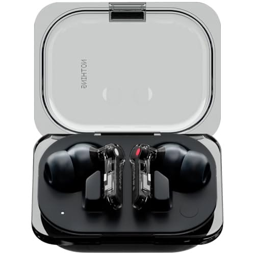
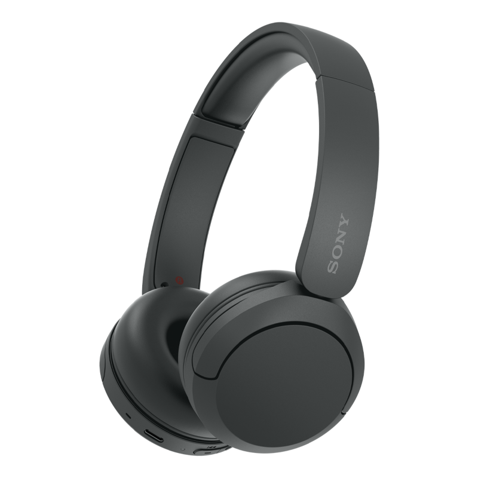
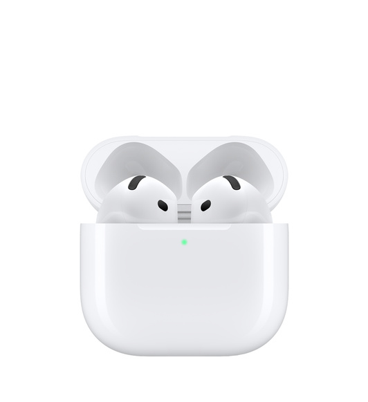

Un buen auricular gaming marca la diferencia entre ganar y perder. El sonido posicional te permite detectar enemigos por su paso, el micrófono claro comunica mejor con tu equipo, y la comodidad te permite sesiones largas sin cansancio. Analizamos los 5 más vendidos en Amazon España.
Tabla comparativa: los 5 mejores auriculares gaming
| Modelo | Conexión | Precio | Drivers | Lo mejor |
|---|---|---|---|---|
| 🥇 HyperX Cloud II | Cable + USB | ~70 € | 53mm | Mejor relación calidad-precio |
| 🥈 SteelSeries Arctis Nova 7 | Inalámbrico + cable | ~150 € | 40mm | Mejor inalámbrico general |
| 🥉 Corsair HS65 | Cable USB | ~60 € | 50mm | Mejor budget con surround |
| 4. Logitech G Pro X | Cable + inalámbrico | ~120 € | 50mm | Mejor para esports |
| 5. Razer BlackShark V2 | Cable + inalámbrico | ~100 € | 50mm | Mejor cancelación de ruido |
1. HyperX Cloud II — El rey del gaming

HyperX Cloud II
~70 €
Puntos fuertes: Drivers de 53mm con sonido envolvente 7.1, micrófono desmontable con cancelación de ruido, almohadillas de espuma viscoelástica.
Puntos débiles: Diseño algo pesado, sin RGB (para quien le gusta).
Ver en Amazon →Ideal para: Gaming en PC y consola. El estándar de la industria gaming desde hace años por su fiabilidad y sonido.
2. SteelSeries Arctis Nova 7 — El más versátil

SteelSeries Arctis Nova 7
~150 €
Puntos fuertes: Inalámbrico + cable, 38h de batería, micrófono retráctil, sonido personalizable con app.
Puntos débiles: Precio alto, los botones son difíciles de distinguir al tacto.
Ver en Amazon →Ideal para: Gamers que quieren un solo auricular para PC, consola y móvil. La versatilidad es su mayor fortaleza.
3. Corsair HS65 — El mejor budget

Corsair HS65
~60 €
Puntos fuertes: Surround 7.1 virtual, drivers de 50mm, micrófono con cancelación de ruido, compatible con iCUE.
Puntos débiles: Sin inalámbrico, el surround solo funciona en PC.
Ver en Amazon →Ideal para: Gamers con presupuesto ajustado que quieren sonido surround sin gastar mucho.
4. Logitech G Pro X — El de esports

Logitech G Pro X
~120 €
Puntos fuertes: Drivers PRO-G de 50mm, tecnología Blue VO!CE para micrófono, diseño ultraligero.
Puntos débiles: La app G Hub es mejorable, el cable no es desmontable.
Ver en Amazon →Ideal para: Gaming competitivo y esports. Diseñado con feedback de profesionales.
5. Razer BlackShark V2 — Mejor cancelación

Razer BlackShark V2
~100 €
Puntos fuertes: Drivers TriForce de 50mm, THX Spatial Audio, almohadillas de gel frío, micrófono HyperClear.
Puntos débiles: El THX solo funciona en PC, el ajuste puede ser justo para cabezas grandes.
Ver en Amazon →Ideal para: Sesiones largas de gaming donde la comodidad y el aislamiento son prioritarios.
¿Cómo elegir auriculares gaming?
Tipo de conexión
- Cable USB/3.5mm: Sin latencia, sin batería, más baratos
- Inalámbrico: Comodidad total, batería limitada, algo de latencia
- Híbrido: Lo mejor de ambos mundos pero más caros
Características clave
- Drivers: 40-50mm son estándar, más grande = más graves
- Sonido posicional: 7.1 virtual o THX para detectar enemigos
- Micrófono: Desmontable o retráctil, con cancelación de ruido
- Comodidad: Almohadillas de espuma o gel para sesiones largas
Preguntas frecuentes
¿Necesito auriculares gaming específicos para jugar?
No es estrictamente necesario, pero los auriculares gaming suelen tener mejor positional de sonido, micrófono de mayor calidad y comodidad para sesiones largas.
¿Con cable o inalámbricos para gaming?
Para gaming competitivo, los de cable tienen menor latencia. Para gaming casual o consola, los inalámbricos son más cómodos y la latencia actual es muy baja.
¿Qué drivers son mejores para gaming?
Los drivers de 40-50mm son los estándar. Los planar magnéticos ofrecen mejor detalle pero son más caros. Para la mayoría de gamers, drivers dinámicos de 40mm son suficientes.